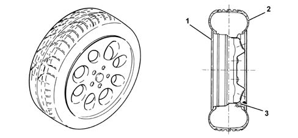
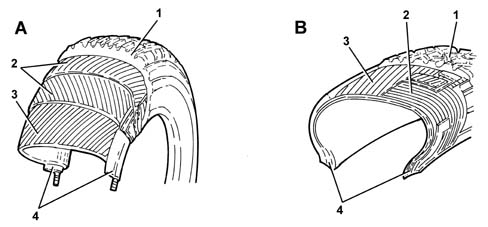
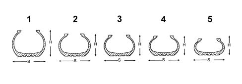

4450B WHEELS AND COMPONENTS
- Path
- Descriptions > 44 SUSPENSION AND WHEELS > 4450 WHEELS AND HUBS > 4450B WHEELS AND COMPONENTS
- Kind
- system description
- Applies to
- all engines; all production periods
- Interactive page
- https://sloeber94.github.io/elrnDB-aGt/en/#/125000386
Applies to: all engines; all production periods
INTRODUCTION
GENERAL VIEW

1 - Rim
2 - Tyre
3 - Inflation valve
The wheels consist of rims, which may be of steel plate or light alloy, and tyres, which represent the element through which all the static or dynamic reactions between car and the ground are exchanged.
Tyres
Construction features
The tyres must perform the following functions:
- withstand the load consisting of the weight of the car and the transported load;
- transmit to the ground the longitudinal effort caused by the driving or braking torque;
- absorb some of the impacts from unevenness of the road, facilitating the work of the suspension;
- withstand lateral thrusts on bends;
- ensure maximum grip on any road surface;
- maintain the above-mentioned characteristics for a satisfactory duration.
The tyre consists of:
- a reinforcement of metal rings, formed by a steel wire braid inserted in the bead, which allows the tyre to be anchored inextensibly on the rim;
- the carcass, made of a series of plies of synthetic material, steel, glass fibre, coated with rubber and arranged in such as way as to form the resistant part of the tyre;
- sidewalls and tread, which coat the carcass and consist of special mixes of different types of rubber and other materials.
Examples of tyre structure

A - Cross-ply tyre
1 - Tread
2 - Cross plies
3 - Cross plies
4 - Bead
B - Radial tyre
1 - Tread
2 - Radial plies
3 - Additional plies
4 - Bead
From the constructional point of view, depending on the type of structure of the carcass, the tyre may be divided into two categories:
- cross ply or conventional, now not in use, in which the carcass structure consists of a certain number of plies, arranged successively and symmetrically in relation to each other, at an angle of between 35° and 50°;
- radial strsucture with the carcass consisting of a first set of plies, arranged radially in relation to the axis of rotation and a second set of additional plies, crossed over each other at an angle of about 15°. The second set of plies is arranged longitudinally on the circumference of the tyre, immediately under the tread.
Compared with the conventional tyre, the radial tyre offers many advantages in terms of road holding, especially on wet roads, capacity to absorb ground unevenness, reduction of drift (term which defines the variation of the trajectory caused by transversal forces) and retention of characteristics over a long time.
Reduction of geometry ratio (H/S)

1 - Series 80, H/S = 0.80
2 - Series 70, H/S = 0.70
3 - Series 65, H/S = 0.65
4 - Series 60, H/S = 0.60
5 - Series 55-50-45-40-35, H/S = 0.55 - 0.35